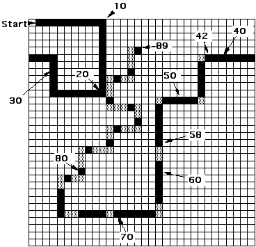

class: center ## Vist [ca.thattommyhall.com](http://ca.thattommyhall.com) Please!  ### @thattommyhall Theatre fan, occasional mountaineer, part time runner, thoroughly nice chap, available in fine bookstores everywhere. [thattommyhall.com](http://thattommyhall.com) --- class: center # New Job! <img src="FL.png" alt="Futurelearn" width="100%"> [futurelearn.com](http://futurelearn.com) --- class: center,middle --- # Biologically Inspired Computation We will be looking at - Genetic Algorithms - Genetic Programming - Artificial Life --- # Genetic Algorithms * Encode solutions as ‘genome’ * Start with random population * Work out their ‘fitness’ * Selecting and ‘breeding’ them * Repeat until a good solution appears --- # Distribution * Island Model * Tommy Method --- class: middle,center --- class: middle,center --- # Robbie the Robot ``` Can see 5 squares 3^5 = 243 possibilities 50% chance of trash, 200 moves Points: hit wall: -5 get can: +10 no can: -1 Max fitness ~500 ``` --- class: middle,center <canvas width="450" height="450" id="board"></canvas> <button onclick="startR()">Start</button> <button onclick="stopR()">Stop</button> --- class: middle,center # Cellular Automata <img src="glider.gif" height="30%" /> <img src="glidergun.gif" height="70%" /> --- class: middle,center # Breeder --- class: middle,center # Turing Machine --- class: middle,center # 1D Automata --- class: center,middle --- # The Majority Problem * 1D Cellular Automata * Radius 3 * Can they perform majority voting? --- .left-column[ ### Gács, Kurdyumov, and Levin] <canvas height="450" id="gkl" width="450" class="centre,middle"></canvas> > If a cell is 0, its next state is formed as the majority among the values of itself, its immediate neighbour to the left, and its neighbor three spaces to the left. If, on the other hand, a cell is 1, its next state is formed symmetrically, as the majority among the values of itself, its immediate neighbor to the right, and its neighbor three spaces to the right. --- .left-column[ ### Random] <canvas height="450" id="rand" width="450"></canvas> --- .left-column[ ### Fitness 10] <canvas height="450" id="10" width="450"></canvas> --- .left-column[ ### Fitness 30] <canvas height="450" id="30" width="450"></canvas> --- .left-column[ ### Fitness 50] <canvas height="450" id="50" width="450"></canvas> --- .left-column[ ### Fitness 70] <canvas height="450" id="70" width="450"></canvas> --- .left-column[ ### Fitness 90] <canvas height="450" id="90" width="450"></canvas> --- .left-column[ ### Fitness 97] <canvas height="450" id="max" width="450"></canvas> --- # Minecraft in Clojurescript <canvas id="game" width="424" height="240"></canvas> <button onclick="startMC()">Start</button> <button onclick="stopMC()">Stop</button> Thanks to [David Nolen](http://swannodette.github.io/2013/06/10/porting-notchs-minecraft-demo-to-clojurescript/)! Link to a [bare version](mc.html) (should be smoother than David's as it's using requestAnimationFrame) --- ## Making cljs fast, by not really using cljs... ```clojure (defmacro forloop [[init test step] & body] `(loop [~@init] (when ~test ~@body (recur ~step)))) (defmacro local ([] `(make-array 1)) ([x] `(cljs.core/array ~x))) (defmacro >> [x v] `(aset ~x 0 ~v)) (defmacro << [x] `(aget ~x 0)) ``` --- class: middle ```clojure (defn count-live [row] (let [count (local 0)] (forloop [(i 0) (< i (.-length row)) (inc i)] (if (aget row i) (>> count (inc (<< count))))) (<< count))) (defn success? [grid] (let [l (.-length grid) first (aget grid 0) last (aget grid (dec l)) first-count (count-live first) last-count (count-live last)] (if (< first-count (/ l 2)) (= 0 last-count) (= l last-count)))) (defn random-grid [p] (let [result (make-array cells)] (forloop [(i 0) (< i cells) (inc i)] (aset result i (> p (rand)))) result)) ``` --- class: middle ```clojure (defn strategy-from-genome [genome] (fn [pos grid] (let [l3 (aget grid (normalise (- pos 3))) l2 (aget grid (normalise (- pos 2))) l1 (aget grid (normalise (- pos 1))) c (aget grid pos) r1 (aget grid (normalise (+ pos 1))) r2 (aget grid (normalise (+ pos 2))) r3 (aget grid (normalise (+ pos 3))) idx (+ (* 64 l3) (* 32 l2) (* 16 l1) (* 8 c) (* 4 r1) (* 2 r2) (* 1 r3))] (= "1" (aget genome idx))))) ``` --- class: middle ```clojure (defn run-sim ([strategy] (run-sim strategy (rand))) ([strategy p] (let [result (make-array cells) init (random-grid p) ] (aset result 0 init) (forloop [(i 1) (< i cells) (inc i)] (aset result i (step (aget result (dec i)) strategy))) result))) (defn step [grid alive?] (let [next (make-array cells)] (forloop [(x 0) (< x cells) (inc x)] (if (alive? x grid) (aset next x true) (aset next x false))) next)) (defn fitness [genome] (let [strategy (strategy-from-genome genome)] (count (filter success? (take 100 (repeatedly #(run-sim strategy))))))) ``` See my [blog](http://www.thattommyhall.com/2013/07/07/evolving-cellular-automata-the-code/) for more details --- # Genetic Programming * Like GA, but grow programs not genomes * s-expressions are *perfect* for this --- # Breeding S-Expressions --- # Zipper Functional way to traverse and update an aggregate data structure [FUNCTIONAL PEARL - The Zipper](http://www.st.cs.uni-saarland.de/edu/seminare/2005/advanced-fp/docs/huet-zipper.pdf) (Huet 97) --- # clojure.zip ```clojure (seq-zip root) Returns a zipper for nested sequences, given a root sequence ``` ```clojure (root loc) zips all the way up and returns the root node, reflecting any changes. ``` ```clojure (node loc) Returns the node at loc ``` ```clojure (next loc) Moves to the next loc in the hierarchy, depth-first. When reaching the end, returns a distinguished loc detectable via end?. If already at the end, stays there. ``` ```clojure (replace loc node) Replaces the node at this loc, without moving ``` ``` (edit loc f & args) Replaces the node at this loc with the value of (f node args) ``` --- # Some More ``` (prev loc) ``` ``` (down loc) ``` ``` (up loc) ``` ``` (left loc) ``` ``` (remove loc) ``` ``` (leftmost loc) ``` ``` (lefts loc) ``` ``` (insert-left loc item) ``` ``` (insert-child loc item) ``` --- ``` > g2 (* (+ 1 2) (- (* 3 4) (+ 5 (+ 6 7)))) > (def z (zip/seq-zip g2)) > (def locs (take-while (complement zip/end?) (iterate zip/next z))) > (doseq [loc locs] (println (zip/node loc))) (* (+ 1 2) (- (* 3 4) (+ 5 (+ 6 7)))) * (+ 1 2) + 1 2 (- (* 3 4) (+ 5 (+ 6 7))) - (* 3 4) * 3 4 (+ 5 (+ 6 7)) + 5 (+ 6 7) + 6 7 nil ``` --- ``` gp> g2 (* (+ 1 2) (- (* 3 4) (+ 5 (+ 6 7)))) gp> (zip/root (zip/edit (nth (iterate zip/next z) 4) inc)) ``` -- ``` (* (+ 2 2) (- (* 3 4) (+ 5 (+ 6 7)))) ``` -- ``` gp> (-> z zip/next zip/next (zip/replace :swapped) (zip/root)) ``` -- ``` (* :swapped (- (* 3 4) (+ 5 (+ 6 7)))) ``` --- # Good Artists Steal? ```clojure (defn at-index "Returns a subtree of tree indexed by point-index in a depth first traversal." [tree point-index] (let [index (mod (Math/abs point-index) (codesize tree)) zipper (zip/seq-zip tree)] (loop [z zipper i index] (if (zero? i) (zip/node z) (if (seq? (zip/node z)) (recur (zip/next (zip/next z)) (dec i)) (recur (zip/next z) (dec i))))))) (defn insert-at-index "Returns a copy of tree with the subtree formerly indexed by point-index (in a depth-first traversal) replaced by new-subtree." [tree point-index new-subtree] (let [index (mod (Math/abs point-index) (codesize tree)) zipper (zip/seq-zip tree)] (loop [z zipper i index] (if (zero? i) (zip/root (zip/replace z new-subtree)) (if (seq? (zip/node z)) (recur (zip/next (zip/next z)) (dec i)) (recur (zip/next z) (dec i))))))) ``` --- # *Now* It's Easy ```clojure ;; Now the mutate and crossover functions are easy to write: (defn mutate [i] (insert-at-index i (rand-int (codesize i)) (random-code 2))) (defn crossover [i j] (insert-at-index i (rand-int (codesize i)) (at-index j (rand-int (codesize j))))) ``` --- # My first attempt ```clojure (defn idx-to-loc [tree idx] (let [z (zip/seq-zip tree) loc (nth (filter (complement zip/branch?) (iterate zip/next z)) idx)] (if (fns (zip/node loc)) (zip/up loc) loc))) (defn subtree [t idx] (zip/node (idx-to-loc t idx))) (defn breed [L R] (let [sizeL (count (flatten L)) sizeR (count (flatten R)) zipL (zip/seq-zip L) zipR (zip/seq-zip R) posL (rand-int sL) posR (rand-int sR) subL (subtree L posL) subR (subtree R posR) ] [(zip/root (zip/replace (idx-to-loc L posL) subR)) (zip/root (zip/replace (idx-to-loc R posR) subL))])) ``` --- # Finally ```clojure (def fns #{'+ '* '-}) (defn locs [G] (let [zipper (zip/seq-zip G) all-locs (take-while (complement zip/end?) (iterate zip/next zipper))] (filter #(not (fns (zip/node %))) all-locs))) (defn replace-loc [l r] (zip/root (zip/replace l (zip/node r)))) (defn breed [L R] (let [l (rand-nth (locs L)) r (rand-nth (locs R))] [(replace-loc l r) :and (replace-loc r l)])) ``` --- # New loc fn ``` gp> g2 (* (+ 1 2) (- (* 3 4) (+ 5 (+ 6 7)))) gp> (doseq [loc (locs g2)] (println (zip/node loc))) (* (+ 1 2) (- (* 3 4) (+ 5 (+ 6 7)))) (+ 1 2) 1 2 (- (* 3 4) (+ 5 (+ 6 7))) (* 3 4) 3 4 (+ 5 (+ 6 7)) 5 (+ 6 7) 6 7 ``` --- # Breeding ``` gp> g1 (+ x (* x 1)) gp> g2 (+ 2 3 (* 4 x) x) gp> (breed g1 g2) [(+ x (* 4 1)) :and (+ 2 3 (* x x) x)] [x :and (+ 2 3 (* 4 x) (+ x (* x 1)))] [(+ x (* x 1)) :and (+ 2 3 (* 4 x) x)] [(+ x (* (+ 2 3 (* 4 x) x) 1)) :and x] [(+ 2 3 (* 4 x) x) :and (+ x (* x 1))] [(+ x (* x 2)) :and (+ 1 3 (* 4 x) x)] [(+ x 2) :and (+ (* x 1) 3 (* 4 x) x)] ``` --- # Hello World Find a soln for `x^2 + x + 1` --- # Creating the initial code ```clojure (defn random-fn [] (rand-nth fns)) (defn random-terminal [] (if (< (rand) 0.5) 'x (- (rand 10) 5))) (defn random-code ([] (random-code 2)) ([depth] (if (zero? (rand-int depth)) (cons (random-fn) (repeatedly 2 #(random-code (inc depth)))) (random-terminal)))) ``` --- # Working out fitness ```clojure (defn to-fn [g] (eval (list 'fn '[x] g))) (defn error [individual] (let [value-function (to-fn individual)] (reduce + (map (fn [[x y]] (Math/abs (- (value-function x) y))) target-data)))) ``` --- # Selection ```clojure (defn sort-by-error [population] (vec (map second (sort (fn [[err1 ind1] [err2 ind2]] (< err1 err2)) (map #(vector (error %) %) population))))) (defn select [population tournament-size] (let [size (count population)] (nth population (apply min (repeatedly tournament-size #(rand-int size)))))) ``` --- # The Main Loop (stolen) ```clojure (defn evolve [popsize] (println "Starting evolution...") (loop [generation 0 population (sort-by-error (repeatedly popsize #(random-code)))] (let [best (first population) best-error (error best)] (println "Generation:" generation) (println "Best error:" best-error) (println "Best program:" best) (if (< best-error 0.1) (println "Success:" best) (recur (inc generation) (sort-by-error (concat (repeatedly (* 1/2 popsize) #(mutate (select population 7))) (repeatedly (* 1/4 popsize) #(breed (select population 7) (select population 7))) (repeatedly (* 1/4 popsize) #(select population 7))))))))) ``` --- # Results ``` Generation: 86 Best error: 0.0012624873111660717 Best program: (+ (* x x) (+ (+ (+ x -0.00569678366123938) -0.00569678366123938) 1.0114536857658676)) Average program size: 8.574 ``` -- ``` (- (+ (+ 1.030006977532941 (+ (* x x) x)) -0.03253646108577968) (* (- x x) (+ (+ (* x -3.1929113275788) x) x))) ``` --- class: center # John Muir Trail  --- # Don't get too excited... <blockquote> The intuition behind these methods is highly appealing, but skeptics decry them as voodoo optimization techniques that rely more on nice analogies to nature than demonstrated computational results on problems that have been studied using other methods. The question isn’t whether you can get decent answers for many problems given enough effort using these techniques. Clearly you can. The real question is whether they lead to better solutions with less implementation complexity than the other methods we have discussed. <cite>Skiena (The Algorithm Design Manual)</cite> </blockquote> --- class: center # Enlil > ### at thy name, which created the world, the heavens were hushed of themselves. --- class: center,middle <img src="db.png" height="30%"> --- class: center,middle # Slides Powered By [Remark](http://gnab.github.io/remark/#1) ## And 1000 lines of horrible Markdown/HTML/Javascript --- # (incomplete) Links * [Zippers](http://en.wikipedia.org/wiki/Zipper_(data_structure)) * [GP Code](https://gist.github.com/lspector/3398614) * [Field Guide to Genetic Programming](http://dces.essex.ac.uk/staff/rpoli/gp-field-guide/A_Field_Guide_to_Genetic_Programming.pdf) * [FunGP](https://github.com/probabilityZero/fungp) * [Tree visitors in Clojure](http://www.ibm.com/developerworks/library/j-treevisit/) --- class: center,middle # Qs?